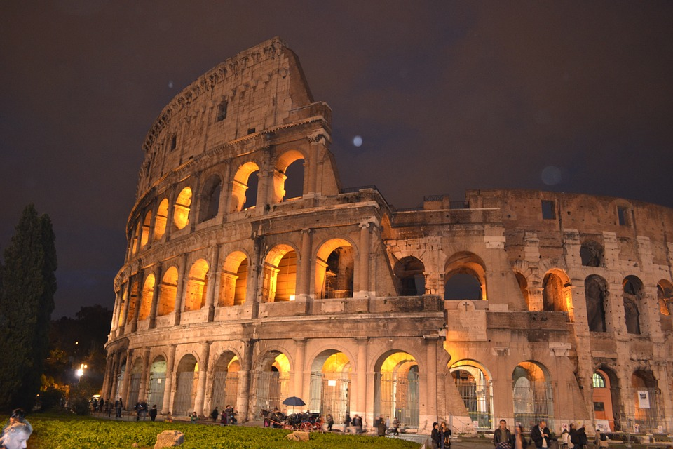
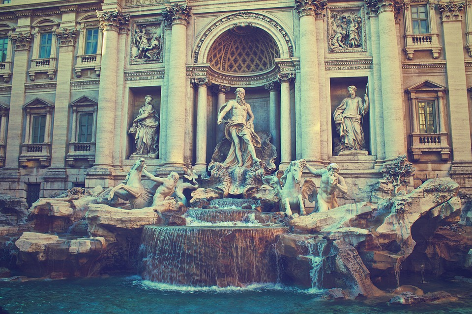
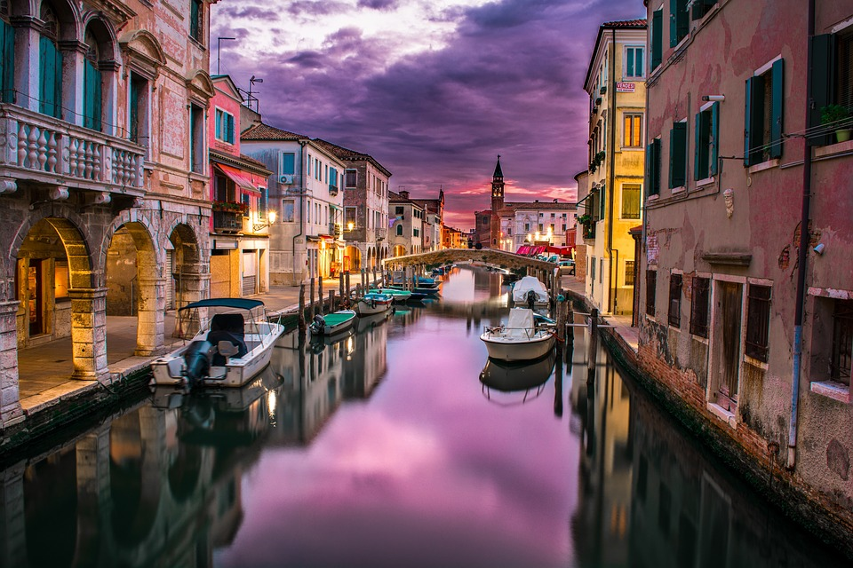
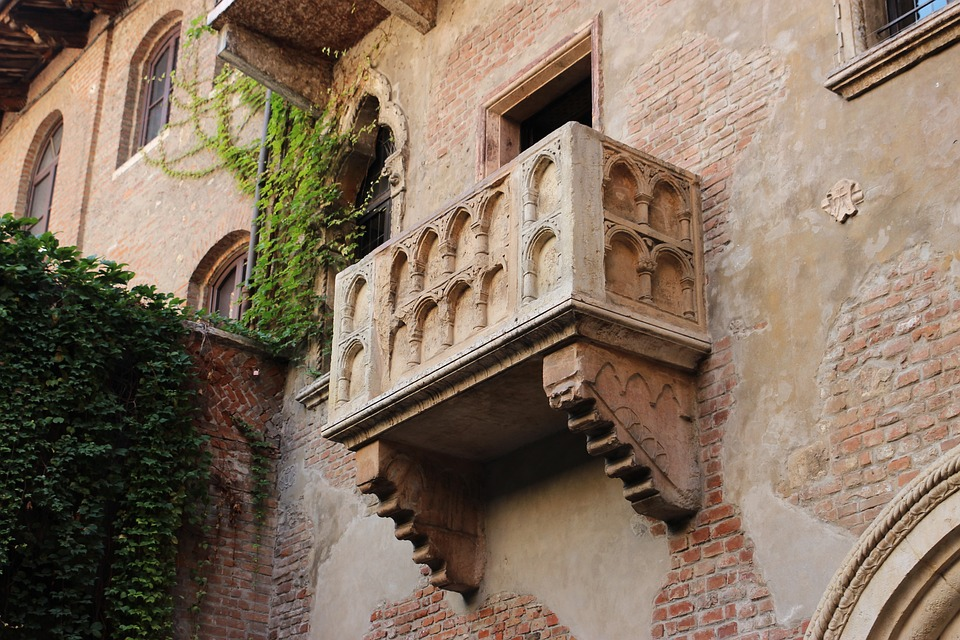
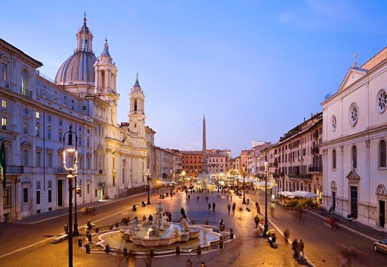
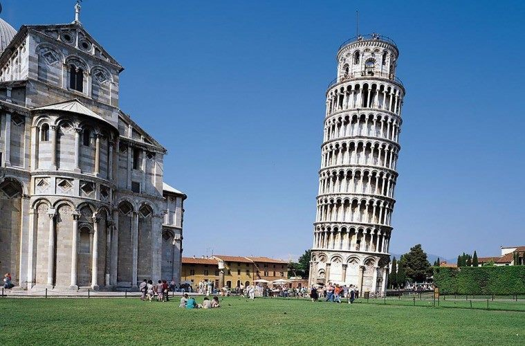
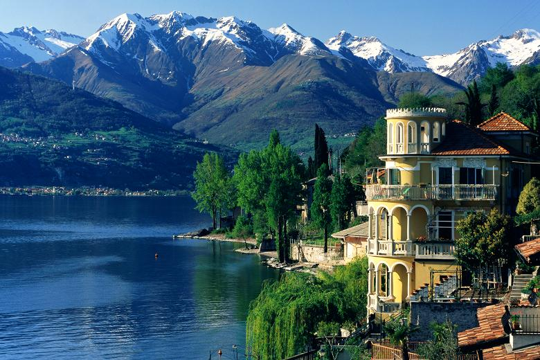
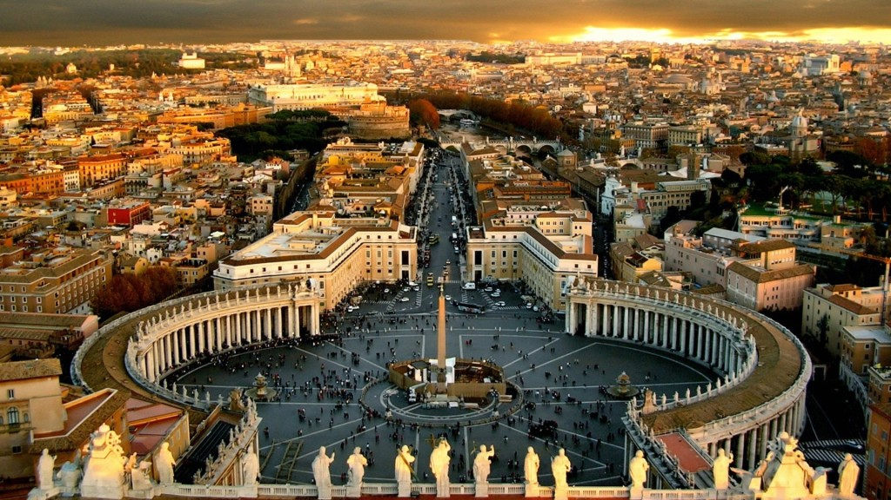
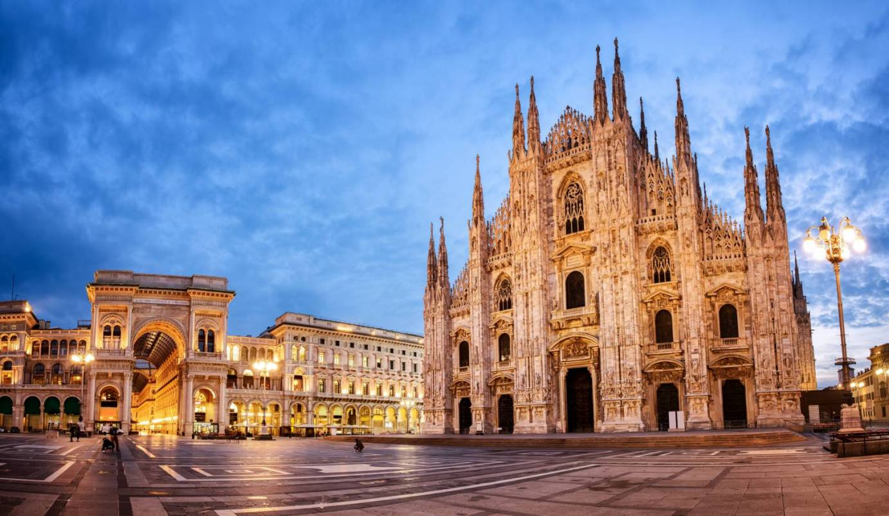

| Αρχική | Αξιοθέατα | Διαμονή | Kουζίνα | Αξιολόγηση | Επικοινωνία |
|---|
Λίγα λόγια για τα 9 πιο εντυπωσιακά αξιοθέατα και προορισμούς της Ιταλίας.Για περισσότερες πληροφορίες κάντε κλίκ στο αξιοθέατο που σας ενδιαφέρει.
Το Κολοσσαίο είναι το πιο εντυπωσιακό κτίριο της ρωμαϊκής αυτοκρατορίας. Ο Αυτοκράτορας Βεσπασιανός άρχισε την κατασκευή του το 72 μ.Χ. και ολοκληρώθηκε το 80 μ.Χ. Το Κολοσσαίο θα μπορούσε να φιλοξενήσει περίπου θεατές που θα εισέρχονταν στο κτίριο μέσω των 80 εισόδων. Οι αυτοκράτορες χρησιμοποιούσαν το Κολοσσαίο για να ψυχαγωγούν το κοινό με αγώνες με ελεύθερη είσοδο.
Η Φοντάνα ντι Τρέβι (Fontana di Trevi) είναι το πιο διάσημο και αναμφισβήτητα το πιο όμορφο συντριβάνι της Ρώμης. Αυτό το εντυπωσιακό μνημείο δεσπόζει στη μικρή πλατεία Trevi που βρίσκεται στην περιοχή του Quirinale.
Σε αυτό το σημείο αξίζει να επισημανθεί, ότι όλα όσα γνωρίζετε για τη Βενετία είναι αλήθεια: οι γόνδολες, τα κανάλια, το φαγητό, η ρομαντική ατμόσφαιρα. Διασχίζοντας το Μεγάλο Κανάλι και θαυμάζοντας τα παλάτσο, τα αρχοντικά και τις εκκλησίες δίπλα στο νερό, ο επισκέπτης έχει την αίσθηση ότι βρίσκεται μέσα σ’ έναν πίνακα ζωγραφικής. Για να γνωρίσει κανείς αληθινά τη Βενετία, επιβάλλεται να παρακολουθήσει μία όπερα ή μία παράσταση κλασσικής μουσικής, να γευτεί φρέσκα ζυμαρικά και γλυκά και να θαυμάσει τα εκθέματα ενός μουσείου τέχνης. Αν αγαπάτε τις φίρμες, θα ξετρελαθείτε με τα πολυτελή μαγαζιά της Πιάτσα Σαν Μάρκο.
|  |  |  |
|---|---|---|
|  |  |  |
|  |  |  |
Είστε ερωτευμένος/η; Tο σπίτι της Ιουλιέτας (Casa di Giulietta) είναι ένα ακόμα αξιόλογο σημείο της πόλης, όπου θα δείτε το διάσημο μπαλκόνι απ’όπου ξεκίνησε η σαιξπηρική ιστορία αγάπης. Οι απανταχού ρομαντικοί και ερωτοχτυπημένοι αφήνουν στους τοίχους της εσωτερικής αυλής του σπιτιού μηνύματα αγάπης και ακουμπούν το στήθος του μπρούτζινου αγάλματος της Ιουλιέτας για να τους φέρει, υποτίθεται, τύχη στον έρωτα.
Η πιάτσα Ναβόνα είναι ο ύμνος της Ιταλίας. Η πιο όμοργη μπαρόκ πλατεία της Ρώμης, σαν στολίδι κοσμεί το κέντρο τραβόντας όλα τα βλέματα πάνω της. Εχει σχήμα αρχαίου σταδίου και χρίστηκε απο τον Πάπα Ιννοκέντιο Ι'
Σημαντίκο, εξίσου, αξιοθέατο λόγω της διαφορετικότητάς του είναι ο Καθεδρικός Ναός της Ιταλικής πόλης της Πίζας, είναι γνωστός παγκοσμίως για την ακούσια κλίση του. Βρίσκεται πίσω από τον Καθεδρικό Ναό και είναι το τρίτο παλαιότερο οικοδόμημα στην Πλατεία του Ντουόμο, της Πίζας γνωστός με το όνομα Πύργος της Πίζας
Ψάχνεις κάτι μαγικό; Η Λίμνη Κόμο(Lago di Como), είναι η πιο δημοφιλής λίμνη της Ιταλίας! Πηγή έμπνευσης για πολλούς συγγραφείς, ποιητές και συνθέτες καθώς προσφέρεται μία μοναδική αίσθηση ρομαντισμού σε ένα τοπίο μοναδικής φυσικής ομορφιάς!
Πηγαίνοντας στη Ιταλία δεν γίνεται να μη επισκευτείς Το Βατικανό. Το Βατικανό είναι ανεξάρτητο κράτος, στη δυτική πλευρά της πόλης της Ρώμης στην Ιταλία και αποτελεί συνέχεια του εκκλησιαστικού (ή και παπικού) κράτους του Μεσαίωνα.
Είσαι άθρωπος της κουλτούρας και της μόδας;! Το Μιλάνο είναι ένα από τα σημαντικότερα κέντρα στον κόσμο για την λυρική όπερα, με το διάσημο Teatro alla Scala (Σκάλα του Μιλάνου). Η Biblioteca Ambrosiana διατηρεί μεταξύ άλλων τα σχέδια και τα σημειωματάρια του Λεονάρντο ντα Βίντσι.